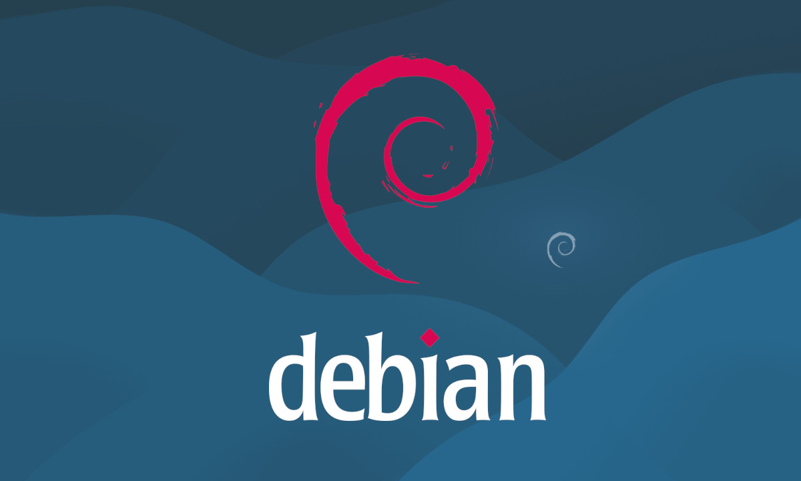

River mató a un club
En Madrid, el mundo vio morir a un pequeño club que se creia grande
En la final de la Copa Libertadores 2018, River Plate y Boca Juniors disputaron un
partido histórico en el estadio Santiago Bernabéu de Madrid. Tras un empate en la ida,
el encuentro de vuelta fue intenso y emocionante. Boca se adelantó con un gol de Benedetto,
pero River igualó con un tanto de Pratto. En tiempo suplementario, goles de Juan Fernando
Quintero y Gonzalo Martínez sellaron la victoria de River por 3-1, consagrándolo campeón en
una final inolvidable para el fútbol sudamericano.
Vea el resumen aquí
Noticia sobre IA y el problema en la comunicacion
Universidades y empresas de Nueva York lideran la lucha contra sesgos lingüísticos en IA
Desde Nueva York.- “El futuro de la IA será multilingüe o no será justo”, advirtió un ingeniero
de datos salvadoreño que desarrolla tecnología en una startup de Manhattan. Esta afirmación,
recogida por The New York Times, sintetiza el debate en una ciudad donde más de 2,4 millones de
personas se comunican en español y se hablan más de 200 lenguas. En este entorno, la cuestión
sobre quién tiene derecho a ser entendido por la tecnología adquiere un carácter urgente de
equidad, representación y acceso.
Noticia completa aquí
Noticion para los amantes de debian y kde plasma
Disponible Debian 13 ‘Trixie’ con Linux 6.12 LTS y KDE Plasma 6.3 con Wayland por defecto

Tras la reciente salida de la tan esperada nueva version de debian linux, la 13 apodada 'Trixie',
los linuxeros fanaticos de esta distro ya tienen disponible el escritorio de KDE Plasma 6.3
el cual viene con la sesión de Wayland por defecto y brinda multiples beneficios a los usuarios
Enterate mas aquí
Así estará el clima en Salta
El pronostico de toda la semana en la ciudad y toda la provincia de Salta

Descubre que depara en la semana el clima segun el servicio meteorologico nacional
para toda la provincia... Que no te tome por sorpresa
Saber más del clima aquí
Joven realiza un incrible efecto dominó
Un joven programador Salteño causa sesacion en las redes al publicar un video viral
El video de este salteño causa furor en las redes y hasta el mismo Messi lo ha compartido.
Miralo hasta el final, no te lo podes perder.
Saber más del clima aquí